|
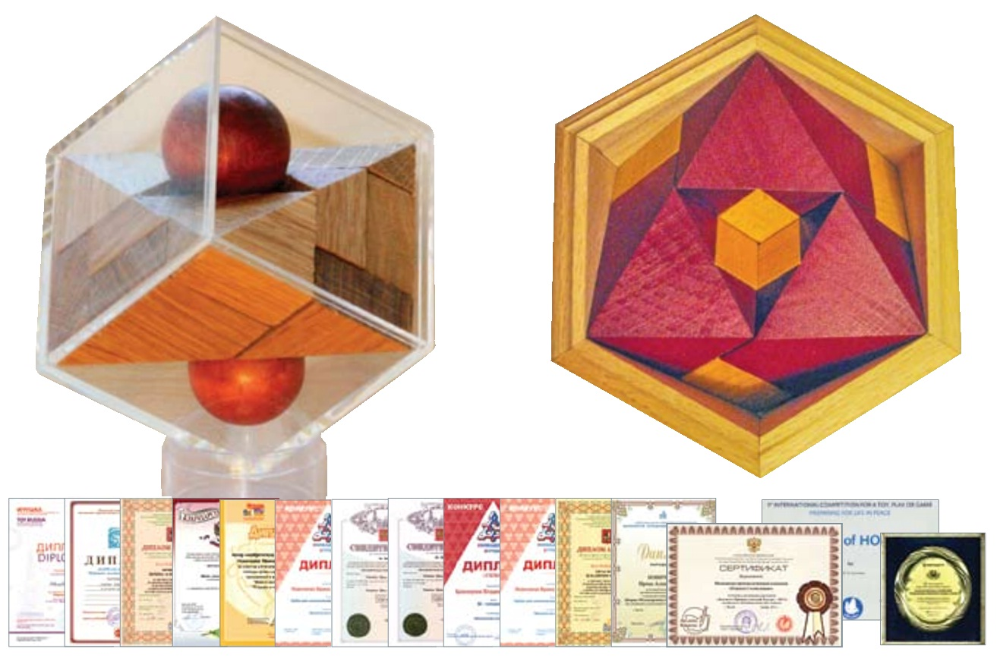
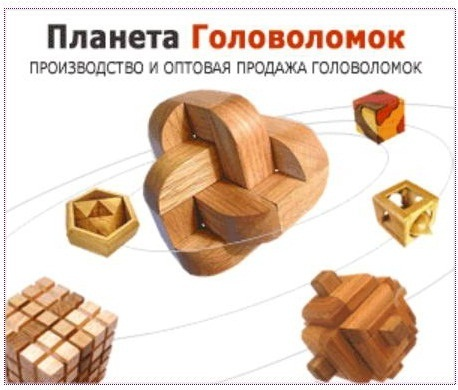
«Планета
Головоломок»
специализируется на изобретательстве и производстве механических
головоломок. Они апробированы при проведении ежегодных чемпионатов
России по пазлспорту (1998 – 2012 гг), региональных
соревнований, международных интеллектуальных фестивалей.
В
настоящее время ассортимент насчитывает свыше 120 наименований
изделий различных типов – от деревянных узлов и укладок до
«невозможных» объектов.
Более
подробно о наших головоломках можно прочитать на страницах
журналов «Наука и жизнь», «Квант», «Левша»,
«Смекалка». Это авторские разработки московских
изобретателей Ирины Новичковой и Владимира Красноухова. Разработки
защищены патентами и авторскими свидетельствами РФ. Мы проводим
мастер-классы и выставки, на которых показываем наиболее
занимательные головоломки различных типов, их дидактические
возможности.
Головоломки
ориентированы на любителей интеллектуальных развлечений всех
возрастов. Российские педагоги рекомендуют их для детей от 7 лет и
старше.
Ирина
Александровна Новичкова:
"Мне
особенно нравятся головоломки, для решения которых требуются не
столько знания и терпение, сколько вдохновение и озарение".
www.planetagolovolomok.ru
Образование: высшее экономическое.
Профессиональные навыки и достижения:
Руководитель предприятия ”Планета Головоломок”.
Участвовала
в организации и проведении специализированных выставок головоломок,
Чемпионатов России, региональных чемпионатов по решению головоломок.
Участие
в международных встречах головоломщиков (в
Лондоне - 1999г; Лос-Анжелесе - 2000г.; Токио и Эйндховене - 2001г и
2004г.; Антверпене и Лейдене - 2002г.; Чикаго и Вельдховене -
2003г.; Хельсинки - 2005 г.; Бостоне - 2006г.; Брисбене - 2007г;
Праге – 2008г; Берлине – 2011г.) позволило Ирине не
только пополнить свою коллекцию головоломок, логических игр и
физических игрушек, но также заявить о себе и своих достижениях.
Ирина
создала и предоставила международному сообществу головоломщиков такие
разработки, как : "Кубик для путешественников", "Октаэдр
на ребрышках", "Невозможный куб", "Трилистник",
"Близнецы", "Олимпийская Ёлочка", "Коктейль
с вишнями", "Гала-куб", "Кирпичики",
"Пифагоровы штаны", "Дельта", "Непослушные
частички", "Кенгуру","Загогулина",
"Дайс-куб", "ММ - заМорочка" и другие.
Имеет ряд изобретений и патентов в области
механических головоломок.
Некоторые
из этих разработок производятся в настоящее время за рубежом по
лицензионным соглашениям, заключенным Ириной Новичковой с фирмами
Испании, Португалии и Франции.
Ирина
Александровна призёр Всероссийского конкурса «Инновационная
игрушка» (2009, 2010), лауреат Всероссийского фестиваля «Мир
игры» в номинации «Педагог играющий» (2010).
Является активным членом Российского клуба
ценителей головоломок "Диоген",
а также Нидерландского клуба головоломок.
В 2003 г. была капитаном сборной России на Чемпионате мира по
паззл-спорту, который проходил в голландском городе Арнеме.
Красноухов
Владимир Иванович
www.planetagolovolomok.ru
– кандидат
технических наук, изобретатель развивающих игр и механических
головоломок.
Победитель
Всесоюзного «Конкурса мирной игрушки» в Ленинграде
(1989), призёр Международного «Конкурса мирной игрушки» в
Варшаве (1989), победитель Всероссийского конкурса «Инновационная
игрушка» (2010), лауреат Всероссийского фестиваля «Мир
игры» в номинации «Педагог играющий» (2010).
Почетный член
Всероссийского общества изобретателей и рационализаторов.
Имеет более 40 патентов на изобретения. Ведёт рубрики в журналах
«Левша», «Смекалка», печатается в журнале
«Наука и жизнь».
Участник
международных встреч изобретателей головоломок.
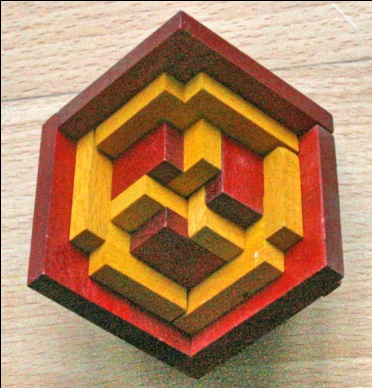 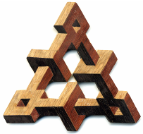
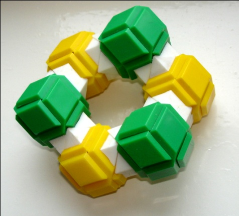 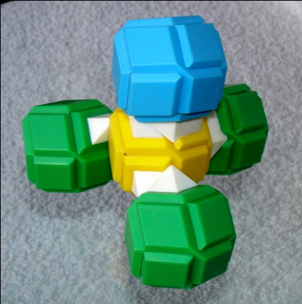
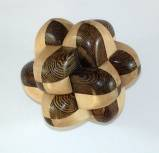 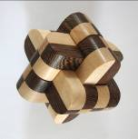
В
области логических игр и головоломок занимается следующими вопросами:
изобретательство,
патентование
разработка
дизайна и технологий
популяризация
интеллектуального досуга
Владимир
Иванович считает: «Самое замечательное свойство головоломок
в том, что они доказывают человеку: безвыходных ситуаций не бывает.
Выход всегда есть, и зачастую даже не один! Поэтому головоломки –
это не только умное развлечение. Решение головоломок укрепляет веру
человека в свои силы, в могущество своего разума, приучает искать
выход из положений, кажущихся на первый взгляд безвыходными. И это
особенно актуально в наше нелёгкое время».
В.И.Красноухов
награждён орденом Почёта .
Награждён Почётным
знаком Федеральной службы по интеллектуальной собственности, патентам
и товарным знакам.
Он Член Экспертного Совета МОО "Экспертиза
для детей".
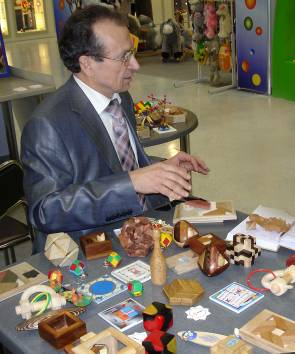
Vladimir Krasnoukhov
Inventor
of Logical Toys and Puzzles
Up
to 1990 Vladimir had worked at the Research Institute as a senior
specialist. He had received (government) USSR State Awards for
development of brand-new engineering models.
Vladimir
is the winner of the All-Union “Peace Toy Competition” in
Leningrad in 1989 and a prize-winner of the International “Peace
Toy Competition” in Warsaw.
Since
1998 Vladimir has been the organizer of the annual Russia’s
Puzzle Championship, and Puzzle Championship of Kursk region. He
publishes articles in the scientific magazine “Science and
Life”, magazine “Smekalka” and is in charge for the
column “For Puzzle Fans” in the magazine “Levsha”.
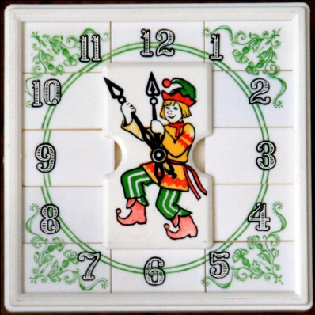 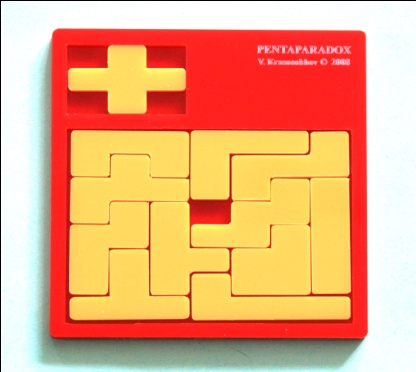
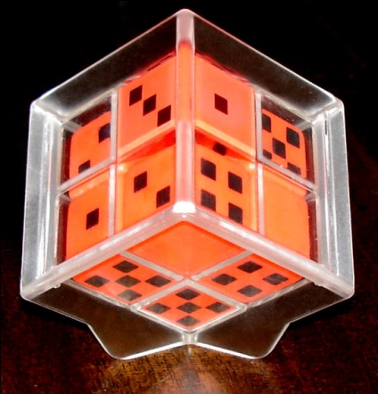
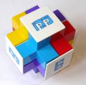
Home
puzzle collection counts about 4 thousand mechanical puzzles, old and
new, self-made and mass-produced. Vladimir himself is a holder of
more then 40 patents on various puzzles.
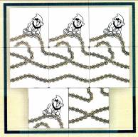
Vladimir
says: “As for me, the great in
puzzles is that they show us that every situation has a way out. And
often not just one! A puzzle, besides being an intellectual leisure,
helps us to strengthen believe in oneself, and teaches to look for a
solution in a situation that seems hopeless. It is sometimes so
familiar”
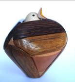 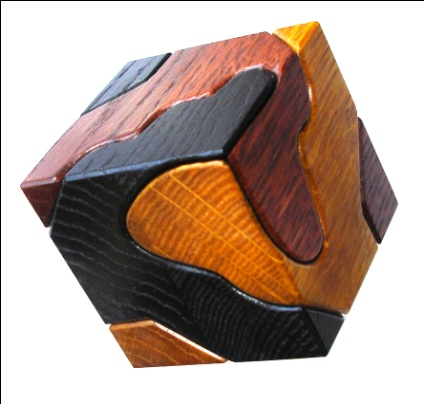
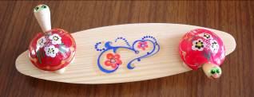
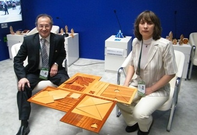
Приглашаем к
сотрудничеству!
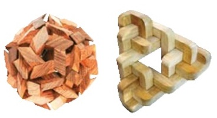
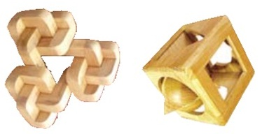
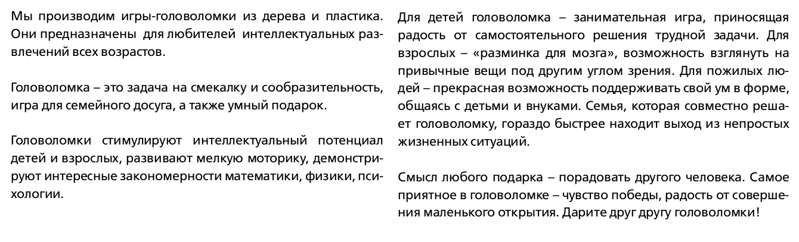
|